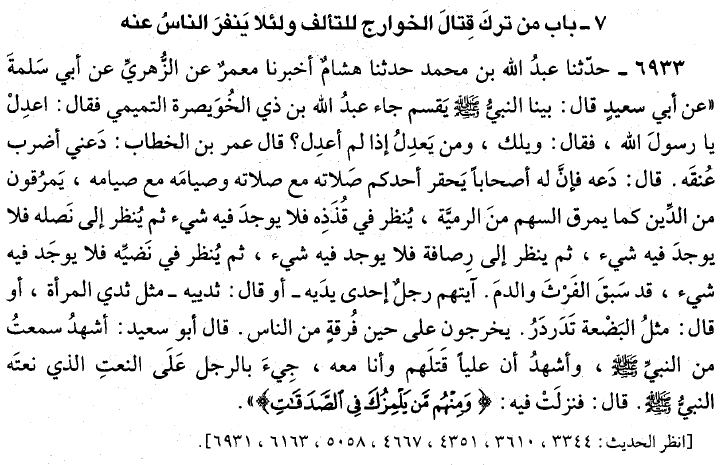

Ṣaḥīḥ Al-Bukhārī: The Ḥadīth of Abū Saʿīd Al-Khudrī Regarding the Khārijite Movement in the Era of the Prophet
Posted by Abu Iyaad on Saturday, October, 22 2016 and
filed under Prophetic Traditions
Imām al-Bukhārī (no. 6933) relates from Abū Saʿīḍ al-Khudrī (raḍiyallāhu ʿanhu) in his Ṣaḥīḥ under the chapter heading: Whoever left fighting the Khārijites in order to maintain unity and to avoid distancing the people from himself.

While the Prophet (ﷺ) was distributing (something, ʿAbd Allāh bin Dhul-Khuwayṣirah al-Tamīmī came and said, “Be just, O Allāh's Messenger!” The Prophet (ﷺ) said, “Woe to you! Who would be just if I were not?” ʿUmar bin al-Khaṭṭāb said, “Allow me to strike his neck! “The Prophet (ﷺ) said, “Leave him, for he has companions, and if you compare your prayers with their prayers and your fasting with theirs, you will look down upon your prayers and fasting, in comparison to theirs. Yet they will pass through the religion just as an arrow passes through it’s target’s body in which case, if the feathers of the arrow are examined, nothing will be found on them, and when its arrowhead is examined, nothing will be found on it; and when its sinew is examined, nothing will be found on it; and then its shaft is examined, nothing will be found on it. The arrow has been too fast to be smeared by the internal contents and blood (of its target). The sign by which these people will be recognized will be a man, on one of his arms – or he said breasts – will be [a growth] like the breast of a woman or like a moving piece of flesh. These people will appear when there will be a split between the people.” Abu Saʿīd [al-Khudrī] added: “I testify that I heard this from the Prophet (ﷺ) and also testify that ʿAlī killed those people while I was with him. The man with the description given by the Prophet (ﷺ) was brought to ʿAli. The following Verses were revealed in connection with that very person (ʿAbd Allāh bin Dhul-Khuwayṣirah al-Tamīmī): ‘And among them are men who accuse you (O Muḥammad) in the matter of (the distribution of) the alms’. (9.58).”
From this ḥadīth are certain numerous points that should be remembered and not ignored:
- In the chapter heading given by al-Bukhārī ʿAbd Allāh bin Dhul-Khuwayṣirah al-Tamīmī (and those with him) are referred to as Khārijites. His deed of making verbal rejection, accusing the Prophet of injustice in distribution of wealth, challenging his authority and removing the hand of obedience is what rendered him a Khārijite. He was not a “Takfīrī “ as such and this is a refutation of all those who claim that takfīr by way of a sin is a condition for a person to be considered a Khārijite. This deception is employed by the Khārijites of today to avoid being labelled Khārijites, and they are supported and aided in this by Western orientalists, academics and rank ignoramuses from the Muslims, many of whom claim knowledge. The core ideology of all Khārijites revolves around revolting against the ruler on grounds of social and economic injustice and alleged, perceived or actual tyranny or profligacy of the ruler. The first Khārijite – the one alluded in the ḥadīth – was not a “Takfīrī”. The next group of Khārijites, those who revolted against ʿUthmān (raḍiyallāhu ʿanhu) were not “Takfīrīs” (though there may have been one among them who accused ʿUthmān of being upon other than Islām). As a group or movement, they were not “Takfīrīs” as such. Then the Khārijites proper who revolted against ʿAlī at a time when there was division and splitting between Muslims as indicated in the ḥadīth, they claimed ʿAlī had give men the right of judgement which belongs only to Allāh, and this became the slogan of all Khārijites thereafter, “Judgement belongs to none but Allāh” and “Whoever does not judge by what Allāh revealed, they are the disbelievers” – and ʿAlī told them when they shouted these slogans, “Truth, by which falsehood is intended.” They did make takfīr of ʿAlī, but this was on the issue of the arbitration (taḥkīm), they were not “Takfīrīs” in the sense that they declared Muslims disbelievers on account of major sins as a doctrinal principle. This affair was a later development among them and it was then documented in the books of creed as one of their distinguishing principles.
- ʿAlī (raḍiyallāhu ʿanhu) showed a great deal of patience with the Khārijites despite their obstinacy, aggravation and incitement towards ʿAlī. He was kind, patient and forbearing with them and he maintained the same that was alluded to in the ḥadīth as indicated by al-Bukhārī, namely, not to fight the Khārijites in order to maintain unity and order within the society. However, eventually when the Khārijites started their rampage and murder, he was resolved to fight them, in accordance with the traditions which command that they be fought and killed.
- The ḥadīth alludes to how these people pass out of Islām just as an arrow passes through its target’s body without there being any trace of blood, flesh or internal contents of that body remaining on the arrow. The scholars explain this to mean that nothing of Islām remains with them, that they pass in and out in a flash, and retain nothing of Islām. Nothing can be found on the arrowhead, or the shaft or the feathers or even the thread (sinew) that ties the arrowhead to the shaft. Such is their example in revealed knowledge!
- Ibn Ḥajar al-ʿAsqalānī in his explanation of the ḥadīth and indicates that after the Prophet (ﷺ) it is not permissible for the rulers to abandon fighting them when they appear, proclaim their doctrine, abandon the jamāʿah and oppose the rulers, when they have the ability to fight them. However, they may, depending on the circumstances, choose not to fight them when they appear with their doctrine in the case this leads to others who share their doctrine to gather and unite together, revolt and start fighting against the Muslims, with the knowledge of how the Khārijites are intense and determined in fighting. Ibn Ḥajar also quotes from other authorities that this abandonment of fighting the Khārijites (who were present and lurking in the era of the Prophet) was only for the beginning of Islām since there was a dire need to abandon it due to the circumstances of that era, and in order to keep their evil at bay. As for thereafter, it is not permissible to abandon fighting them unless the ruler sees a beneficial interest in not fighting them.
- The Prophet (ﷺ) said to ʿUmar: “Leave him, for he has companions...” This is an indication that the Prophet knew of others who were with Dhul-Khuwayṣirah who were upon this ideology and this orientation. And as Ibn Ḥajar explains, the Prophet was challenged on two separate occasions, not one. For one was in 8H upon return from the Ḥunayn and distributing silver and the other was on the occasion of distributing gold which had been sent by ʿAlī from Yemen in 9H. Hence, there was a clear movement in the time of the Prophet which he knew of and he informed his Companions of the time and circumstances in which they will come out and separate from the main body, alongside their statements, deeds and traits. However, he did not allow him to be killed because he did not want this to make others flee away from accepting Islām.
- It should be clear that all Khārijite movements arise due to what they perceive or see of lack of “social justice” and this is the slogan of every Khārijite revolutionary, wanting to establish “justice” and “restoring Allāh’s law”. When you look at the writings of al-Mawdūdī and Quṭb you see all the conceptual ingredients for the Khārijite ideology. They both spoke about “social justice”, al-Mawdūdī even claimed that the Prophets came to topple the tyrants in order establish social justice. Quṭb wrote an entire book on “Social Justice in Islām” and likewise, “The Battle Between Capitalism and Islām”. Both of them claimed that lawgiving (ḥākimiyyah) and political authority (sulṭāh) are the quintessential elements of divinity and the essence of Tawḥīd. Both of them made takfīr of rulers, al-Mawdūdī in a subtle manner and Quṭb in an explicit manner. Both of them called for general, world-wide revolutions to topple the tyrants and usurpers of political power and lawgiving status. So when one looks at the Khārijite movement in the era of the Prophet with its underground presence and murmurings here and there and accusations of “injustice” and not judging by what Allāh ordered (of justice), and the Khārijite movement against ʿUthmān who came out on similar grounds, perceived social injustice in matters of wealth and power, and the Khārijites who came out against ʿAlī in the issue of taḥkīm and ḥukm – the matter should be crystal clear. In turn, we see that all those affected by these books and who propound the same doctrine, like Ayman al-Zawāhirī, Sayyid Imām, Abū Muḥammad al-Maqdisī, Abū Qatādah, al-Qaeda, ISIS and so on, their statements and deeds are coming directly from that same spring and fountain. They have drunk and been nourished by it and it is the true source of their ideology. Thereafter, they tried to read this doctrine into the books of Ibn Taymiyyah and Ibn ʿAbd al-Wahhāb when it is nowhere to be found therein, rather it is extensively refuted therein. No one doubts their Khārijiyyah save an ignoramus amongst the Muslims or the Western orientalist and academic who is happy to consume the propagandist lies of Khārijites(such as Abū Qatādah and Abū Muḥammad al-Maqdisī) and then claim that they represent Islām or ‘Salafism’.
Refer to Fatḥ al-Bārī (al-Maktabah al-Salafiyyah) 12/290 onwards.
Abu ʿIyāḍ @abuiyaadsp 21 Muharram 1438 / 22 October 2016
|